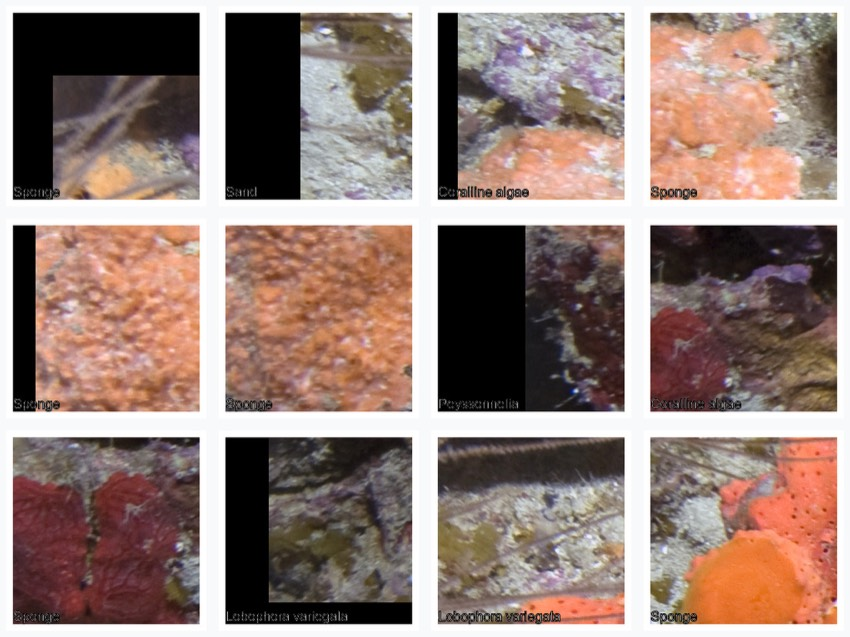
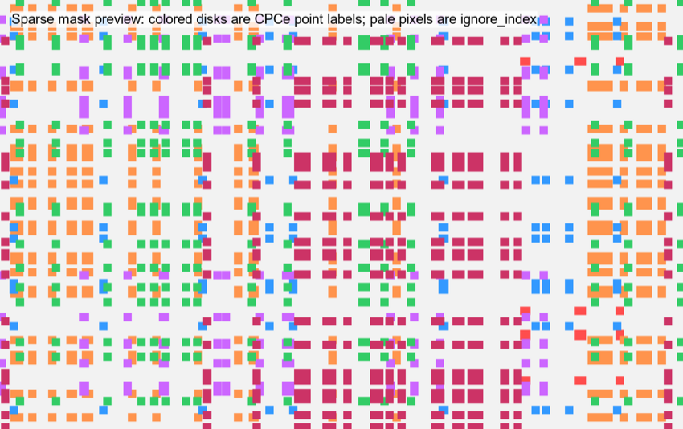

Worked examples and output gallery
examples.RmdThese examples use files installed with pointcoral,
require no internet connection, and write only to temporary
directories.
library(pointcoral)
example_dir <- system.file("extdata", package = "pointcoral")
points <- read_cpce_folder(example_dir, image_root = example_dir, recursive = FALSE)
crosswalk <- read_label_crosswalk(file.path(
example_dir, "pointcoral_example_crosswalk.csv"
))
points_clean <- standardize_labels(points, crosswalk)Tidy point rows
Original CPCe fields remain beside standardized fields. Pixel coordinates are in the matched image’s pixel coordinate system.
knitr::kable(
head(points_clean[c(
"image_id", "point_id", "x_px", "y_px", "raw_label",
"full_label", "major_category", "class_id"
)], 10),
caption = "First ten bundled point annotations."
)| image_id | point_id | x_px | y_px | raw_label | full_label | major_category | class_id |
|---|---|---|---|---|---|---|---|
| HIW_158_W_U-1 | 1 | 19 | 11 | SPO | Sponge | SPONGES (S) | 2 |
| HIW_158_W_U-1 | 2 | 7 | 107 | S | Sand | SAND, PAVEMENT, RUBBLE (SPR) | 8 |
| HIW_158_W_U-1 | 3 | 26 | 165 | CALG | Coralline algae | CORALLINE ALGAE (CA) | 7 |
| HIW_158_W_U-1 | 4 | 69 | 202 | SPO | Sponge | SPONGES (S) | 2 |
| HIW_158_W_U-1 | 5 | 26 | 243 | SPO | Sponge | SPONGES (S) | 2 |
| HIW_158_W_U-1 | 6 | 43 | 305 | SPO | Sponge | SPONGES (S) | 2 |
| HIW_158_W_U-1 | 7 | 2 | 363 | PEYS | Peyssonnelia | PEYSSONNELIACEAE | 5 |
| HIW_158_W_U-1 | 8 | 74 | 452 | CALG | Coralline algae | CORALLINE ALGAE (CA) | 7 |
| HIW_158_W_U-1 | 9 | 43 | 469 | SPO | Sponge | SPONGES (S) | 2 |
| HIW_158_W_U-1 | 10 | 18 | 541 | LOBO | Lobophora variegata | MACROALGAE (MA) | 4 |
Point-count cover
cover <- summarize_points(
points_clean,
by = character(),
class_col = "major_category"
)
knitr::kable(cover, digits = 1, caption = "Pooled bundled-example point counts.")| major_category | n | n_points | percent |
|---|---|---|---|
| CORAL (C) | 10 | 200 | 5.0 |
| CORALLINE ALGAE (CA) | 31 | 200 | 15.5 |
| MACROALGAE (MA) | 18 | 200 | 9.0 |
| PEYSSONNELIACEAE | 23 | 200 | 11.5 |
| SAND, PAVEMENT, RUBBLE (SPR) | 74 | 200 | 37.0 |
| SPONGES (S) | 44 | 200 | 22.0 |

The plotted percentages are calculated from 200 demonstration points. Pooling is shown to illustrate output, not to prescribe analysis across sampling units.
Image overlay

Generate project overlays with write_qc_overlays().
Inspect image orientation, edge points, recognizable benthic features,
and the correspondence between point positions and labels.
Point-centered patches

Patches are square pixel crops. Near an image edge,
edge = "skip" omits a crop and edge = "pad"
adds black pixels. A patch can contain several benthic types even though
its target is inherited from the center point.
Sparse weak-label masks

The colored disks encode point classes. Pale pixels use
ignore_index; they are unknown rather than observed
background.
CPCe output workbook raw tabs
read_cpce_output_raw_tabs() handles workbooks with one
sheet per image ending in _raw. It keeps within-sheet order
as point_index and skips deep_cres_..._raw
sheets by default because they use another layout.
raw_tabs <- read_cpce_output_raw_tabs(file.path(
example_dir, "pointcoral_example_cpce_output_raw_tabs.xlsx"
))
knitr::kable(
raw_tabs[c(
"image_name", "point_index", "raw_data",
"cpce_major_category", "major_category"
)],
caption = "Rows from the bundled demonstration workbook."
)| image_name | point_index | raw_data | cpce_major_category | major_category |
|---|---|---|---|---|
| Sample_A | 1 | SPO | S | SPONGES (S) |
| Sample_A | 2 | PEYS | MA | PEYSSONNELIACEAE |
| Sample_A | 3 | S | SPR | SAND, PAVEMENT, RUBBLE (SPR) |
| Sample_A | 4 | CALG | CA | CORALLINE ALGAE (CA) |
| Sample_B | 1 | LOBO | MA | MACROALGAE (MA) |
| Sample_B | 2 | SS | C | CORAL (C) |
| Sample_B | 3 | P | SPR | SAND, PAVEMENT, RUBBLE (SPR) |
For project labels, pass a reviewed crosswalk explicitly. The built-in example mapping should not be assumed to match another CPCe codefile.
Complete output folder
out_dir <- tempfile("pointcoral-example-")
result <- run_pointcoral(
cpce_dir = example_dir,
image_root = example_dir,
out_dir = out_dir,
crosswalk_path = file.path(example_dir, "pointcoral_example_crosswalk.csv"),
recursive = FALSE,
make_patches = FALSE,
make_masks = FALSE,
make_qc = FALSE
)
data.frame(
output = names(result$paths),
file = basename(unlist(result$paths)),
row.names = NULL
)
#> output file
#> 1 points_raw points_raw.csv
#> 2 points_clean points_clean.csv
#> 3 validation_report validation_report.csv
#> 4 crosswalk_check crosswalk_check.csv
#> 5 label_summary label_summary.csv
#> 6 image_summary image_summary.csv
#> 7 transect_summary transect_summary.csv
#> 8 site_summary site_summary.csv
#> 9 image_summary_clean_label image_summary_clean_label.csv
#> 10 transect_summary_clean_label transect_summary_clean_label.csv
#> 11 site_summary_clean_label site_summary_clean_label.csv
#> 12 image_summary_ml_class image_summary_ml_class.csv
#> 13 transect_summary_ml_class transect_summary_ml_class.csv
#> 14 site_summary_ml_class site_summary_ml_class.csv
#> 15 class_lookup class_lookup.csv
#> 16 labels labels.csv
#> 17 class_lookup class_lookup.csv
#> 18 labels_train labels_train.csv
#> 19 labels_val labels_val.csv
#> 20 labels_test labels_test.csvSee Get started for the reasoning behind each step.